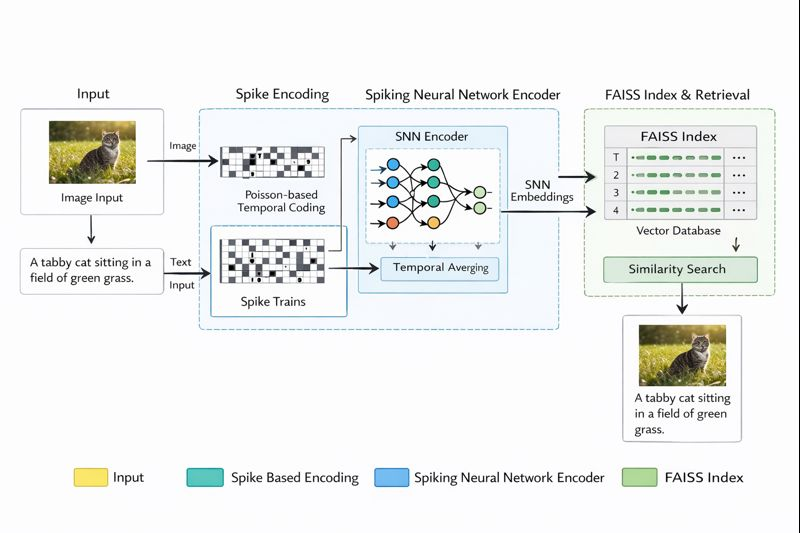
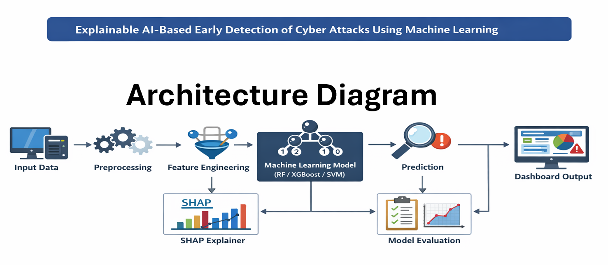

Flagship Research Project
Biologically Inspired Multimodal Retrieval using Spiking Neural Networks and FAISS
Problem
Multimodal retrieval systems typically rely on dense artificial neural networks, which lack biological plausibility and energy-efficient temporal processing. This project explores whether spiking neural networks can be used to learn aligned image–text representations for retrieval, inspired by episodic memory mechanisms in the brain.
Approach
I designed an end-to-end multimodal retrieval pipeline using spiking neural networks as encoders for both image and text modalities. Inputs are converted into spike trains using Poisson encoding, and embeddings are trained using contrastive learning. Learned representations are indexed using FAISS for efficient similarity search.
System Architecture
- Image encoder and text encoder implemented using LIF-based spiking neurons
- Surrogate gradient learning for backpropagation through spikes
- Shared embedding space for cross-modal alignment
- FAISS-based nearest neighbor indexing for retrieval

Experimental Setup
- Dataset: Image–text paired dataset
- Embedding dimension: 512
- Training: Contrastive loss with stable convergence
- Evaluation metrics: Recall@1, Recall@5, Mean Reciprocal Rank (MRR)
Results
The system achieved stable training convergence and demonstrated effective cross-modal retrieval performance, validating the feasibility of spike-based multimodal representation learning.
Reproducibility
The complete codebase includes structured experiment tracking, configuration files, and evaluation scripts to ensure reproducibility.
Applied Research Project
SmartCampus Federated Learning for Face Recognition
Problem
Centralized face recognition systems raise privacy concerns when training data originates from multiple stakeholders. This project addresses the challenge of building a robust face recognition model without sharing raw facial data across clients.
Approach
I implemented a federated learning pipeline using decentralized clients and a central server for model aggregation. Each client trains locally on private facial data, while only model updates are shared. The system uses a lightweight CNN for efficient training.
System Architecture
- Federated client–server setup using Flower
- FedProx strategy to handle non-IID data
- Local training with periodic global aggregation
Experimental Setup
- Dataset: AT&T Faces dataset
- Clients: Simulated multi-client environment
- Metrics: Client-side accuracy across communication rounds
- Hardware: CPU-based training
Results
The federated system demonstrated consistent model improvement across rounds while preserving data privacy, validating the effectiveness of decentralized training for face recognition.
Reproducibility
The repository includes preprocessing scripts, training logic, and evaluation utilities for end-to-end reproducibility.
Research Project
Leakage-Aware Explainable Network Intrusion Detection Using Random Forest and SHAP on the UNSW-NB15 Dataset
Project Overview
This project develops a leakage-aware and explainable machine learning framework for network intrusion detection on the UNSW-NB15 (UNW-NB15 / UNSW-NB15) dataset.
The primary classifier is an ensemble-based Random Forest (RF), and the interpretability component leverages SHAP
(SHapley Additive exPlanations) with tree-specific explanations via shap.TreeExplainer.
The methodology is structured to satisfy two research requirements central to cybersecurity analytics: (1) predictive reliability under controlled feature handling (mitigating inflated metrics caused by label leakage), and (2) operationally interpretable outputs that support analyst reasoning, alert triage, and auditability.
The project benchmarks the RF against representative baseline families under matched preprocessing conditions: Logistic Regression, Decision Tree, K-Nearest Neighbors (KNN), and XGBoost.
Research Motivation
- Spurious correlations and leakage effects: features can unintentionally encode the target label or act as proxies.
- Analyst trust and evidence requirements: security teams require explanations to support incident investigation.
- Cost-sensitive error profiles: different operational contexts impose different costs for false positives/false negatives.
Problem Statement
Let X ∈ ℝᵈ denote the preprocessed representation of a network flow, and let y ∈ {0,1} represent the binary class label, where: y = 0 is benign and y = 1 is malicious. The core task is to learn a classifier f(X) → {0,1} that minimizes predictive error while avoiding leakage-induced shortcuts.
Key Idea: Leakage Handling Strategy
Leakage-aware learning is implemented by removing known fields that can directly or indirectly encode the label.
S' = S \ {attack_cat, id}. Operationally, the pipeline drops attack_cat and id when present.
Experimental Setup (High-level)
- Load UNSW-NB15 training data.
- Apply cleaning, leakage removal, label normalization, and one-hot encoding.
- Train baseline models (LR, DT, KNN, XGBoost) and the primary RF.
- Evaluate with classification metrics on a held-out internal validation split and generate artifacts.
- Generate RF explanation artifacts using SHAP and a SHAP summary plot.
Explainable AI Integration using SHAP
For the RF model, explainability uses shap.TreeExplainer(rf) and computes SHAP on a reproducible subset:
X_sample = X_test.sample(500, random_state=42).
This supports global feature attribution while keeping runtime stable.
Results (from repository outputs)
| Model | Accuracy | Precision | Recall | F1-Score | AUC |
|---|---|---|---|---|---|
| Random Forest | 0.9760 | 0.9828 | 0.9733 | 0.9781 | 0.9970 |
| XGBoost | 0.9733 | 0.9825 | 0.9687 | 0.9756 | 0.9965 |
| Decision Tree | 0.9642 | 0.9666 | 0.9683 | 0.9675 | 0.9637 |
| K-Nearest Neighbors | 0.8047 | 0.8286 | 0.8136 | 0.8210 | 0.9083 |
| Logistic Regression | 0.7528 | 0.8445 | 0.6754 | 0.7505 | 0.8223 |
Reproducibility & Artifacts
Reproducibility is supported by explicit parameter control (e.g., random seeds and consistent preprocessing), and the pipeline produces performance artifacts such as confusion matrices, ROC curves, SHAP summary plots, and consolidated baseline comparison results.

Links
GitHub: https://github.com/Kumaran-Research/UNSW-XAI-Project.git
Additional implementation details, experiment logs, and results are available in the respective GitHub repositories.